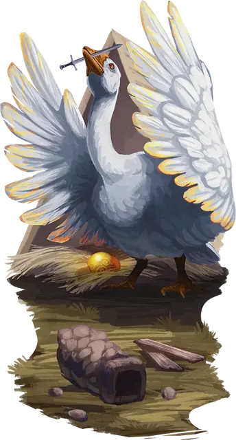

Гигантская гусыня
Giant Goose
Большая Фея, обычно нейтральная

Класс Доспеха 13
Хиты 60 (8к10 + 16)
Скорость 30 футов, летая 30 футов
| мод | спас | ||
|---|---|---|---|
| СИЛ | 14 | +2 | +2 |
| ЛОВ | 16 | +3 | +3 |
| ТЕЛ | 15 | +2 | +2 |
| мод | спас | ||
|---|---|---|---|
| ИНТ | 6 | −2 | −2 |
| МДР | 14 | +2 | +2 |
| ХАР | 11 | +0 | +0 |
Навыки Восприятие +6
Чувства тёмное зрение 60 футов, пассивное Восприятие 16
Языки понимает Великаний и Сильван, но не говорит
Опасность 3 (700 опыта)
Бонус мастерства +2
Действия
Мультиатака. Гусыня совершает одну атаку Клювом и две атаки Крыльями.
Клюв. . Рукопашная атака оружием: +4 к попаданию, досягаемость 10 футов, одна цель. Попадание: 9 (2к6 + 2) дробящего урона.
Крыло. . Рукопашная атака оружием: +4 к попаданию, досягаемость 5 футов, одна цель. Попадание: 7 (1к10 + 2) дробящего урона, и цель должна преуспеть в спасброске Силы Сл 12, иначе падает ничком.
Громогласный гогот (перезарядка 5-6). Гусыня гогочет с оглушительной громкостью. Каждое существо в пределах 30 футов от гусыни должно совершить спасбросок Телосложения Сл 12. В случае провала существо получает 16 (3к10) урона звуком и становится оглохшим до начала следующего хода гусыни. В случае успеха существо получает только половину этого урона. Гогот слышен на расстоянии до 300 футов.
Описание
Великаны держат гусынь в качестве домашнего скота, ради яиц и потому, что гуси - отличные часовые, защищающие собственность великанов с помощью своих острых чувств и громких голосов. Гигантские гусыни, из породы фей, не только значительно крупнее обычных гусей, но и обладают двумя магическими способностями, которые делают их еще более ценными: их крик является отличной защитой от незваных гостей, а также они могут откладывать яйца, чья скорлупа состоит из чистого золота.
По приказу своего хозяина гигантская гусыня откладывает золотое яйцо — полую золотую скорлупу длиной 1 фут и весом 2 фунта. Скорлупа стоит 100 зм. Иногда в яйце необъяснимым образом оказывается какая-нибудь маленькая безделушка или небольшой магический предмет. Однажды снеся золотое яйцо, гигантская гусыня не сможет сделать это снова в течение года и одного дня.
Вы можете использовать таблицу Безделушки из гусиного яйца, чтобы определить содержимое золотого яйца. Гигантское гусиное яйцо может стать отличным способом подарить персонажам предмет, важный для истории приключения или вашей кампании.
Безделушки из гусиного яйца
| к12 | Содержимое яйца |
| 1 | Яйцо пустое, но на внутренней стороне скорлупы написано стихотворение или изображена замысловатая иллюстрация. |
| 2 | Под золотой скорлупой находится карамельное яйцо. |
| 3 | В яйце находится маленький игрушечный гусь, который издает громкий гогочущий звук, когда его сжимают |
| 4 | Яйцо содержит зелье силы великана [potion of giant strength] (холмового великана) без ёмкости. |
| 5 | В яйце находится жемчужина силы [pearl of power] |
| 6 | Яйцо содержит брошь защиты [brooch of shielding] |
| 7 | В яйце находится статуэтка чудесной силы [figurine of wondrous power] (серебряный ворон), которая автоматически активируется при вскрытии яйца, выпуская то, что кажется живой птицей. |
| 8-12 | Яйцо пустое |